Task 1: Explore the Environment
Task 1: Configure L2 Access VLANs¶
New to Ansible? The Ansible Primer covers playbooks, plays, tasks, variables, and modules — everything you need before diving in here.
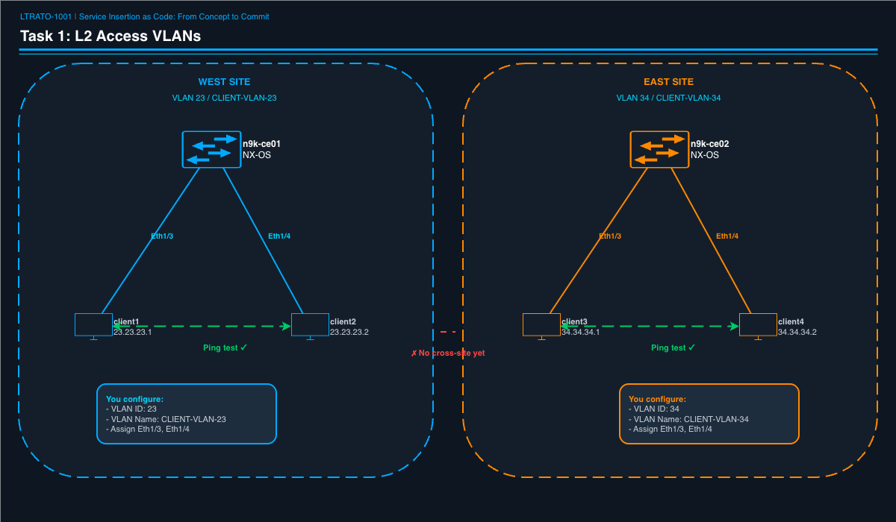
Objective¶
Configure VLANs on the N9K CE switches so Linux clients on the same switch can communicate on the same vlan.
Before Task 1: - Client1 (23.23.23.1) CANNOT reach Client2 (23.23.23.2) - Client3 (34.34.34.1) CANNOT reach Client4 (34.34.34.2)
After Task 1: - Client1 CAN ping Client2 (same switch, same VLAN) - Client3 CAN ping Client4 (same switch, same VLAN)
Why VLANs?¶
The client-facing ports (Eth1/3, Eth1/4) on each N9K switch are currently in their default state — they operate as independent interfaces with no bridging between them. Even though client1 and client2 are plugged into the same physical switch, they can't talk to each other because there's no shared broadcast domain.
VLANs (Virtual Local Area Networks) solve this by creating a logical broadcast domain:
- Create a VLAN — This is a virtual switch fabric inside the physical switch. All ports assigned to the same VLAN can communicate at Layer 2.
- Convert ports to switchport mode — NX-OS ports can be either Layer 3 (routed, each port has its own IP) or Layer 2 (switched, ports share a VLAN). We need Layer 2 for client connectivity.
- Assign both client ports to the same VLAN — Now Eth1/3 and Eth1/4 are in the same broadcast domain, and frames are bridged between them.
VLAN IDs matter because they link to client subnets. West-side clients are on 23.23.23.0/24 — VLAN 23. East-side clients are on 34.34.34.0/24 — VLAN 34. This naming convention makes the network topology self-documenting.
This is the foundation — Task 2 adds Layer 3 gateways on these VLANs (SVIs), and Task 3 carries VLAN routes across the SP core.
Step 1: Verify the Baseline¶
Before configuring anything, verify the initial state of the network. Clients on the same switch cannot reach each other yet — not because something is broken, but because the VLANs haven't been configured. This is your baseline.
From the server terminal, SSH into linux-client1 and try to ping its neighbor on the same switch. You could SSH into the client first and then run the ping from there — but here we use the shorthand form that passes the command directly over SSH in one line:
You should see 100% packet loss:
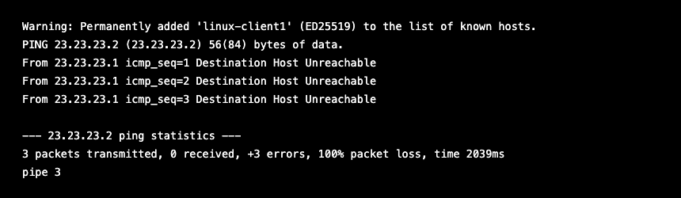
Try the east side the same way:
Same result — 100% packet loss. Both pairs of clients are physically connected to the same switch, but with no VLAN bridging the ports, the frames have nowhere to go. This is expected — no VLANs have been configured yet.
Why start with verification? In automation, your first step should always be to verify the current state. This gives you a baseline to compare against after the playbook runs. If you don't know where you started, you can't prove you improved anything.
Step 2: Read the Playbook¶
Before making any changes, open the playbook and read through it:
Note: You can use any Linux text editor you prefer —
vi,vim,nano, etc. All examples in this lab usenano.
Note: The image below has comments removed for brevity — it shows only the YAML structure you need to understand.
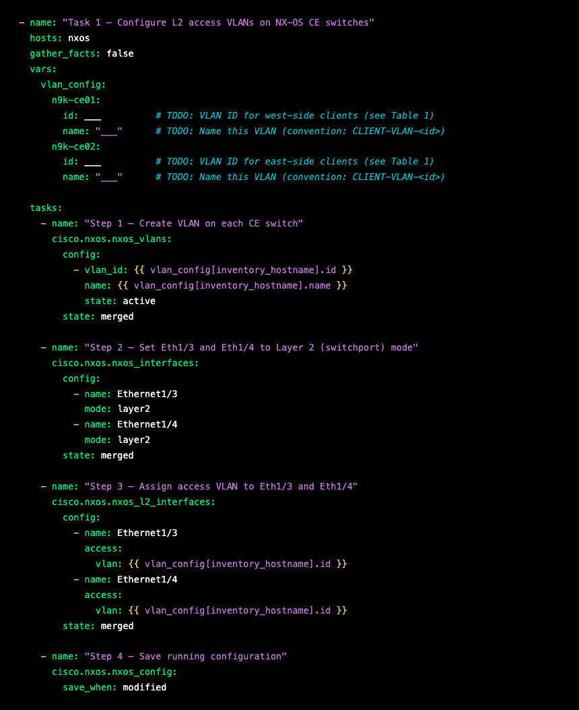
Read through the playbook carefully. Here's what each section does:
-
vars: vlan_config— The per-device variable block at the top of the playbook. You'll fill in the VLAN ID and name for each switch in Step 3. These values are what{{ vlan_config[inventory_hostname].id }}pulls from at runtime — one entry per device, looked up automatically. -
cisco.nxos.nxos_vlans(Task 1) — A declarative module. You describe the desired state — "VLAN 23 should exist and be named CLIENT-VLAN-23" — and Ansible determines what CLI commands to send. If the VLAN already exists with the correct config, nothing changes. -
cisco.nxos.nxos_interfaces(Task 2) — Sets Eth1/3 and Eth1/4 to Layer 2 (switchport) mode. On N9Kv, ports boot in Layer 3 (routed) mode by default. This module checks the current mode and only makes a change if it's wrong — truly idempotent. -
cisco.nxos.nxos_l2_interfaces(Task 3) — Assigns the access VLAN to each port. Uses{{ vlan_config[inventory_hostname].id }}to pull the correct VLAN ID from your vars — the same task runs on both switches and produces different results automatically. -
cisco.nxos.nxos_config(Task 4) — Saves the running config to startup-config, but only if something actually changed (save_when: modified). Safe to re-run — won't cause unnecessary writes.
💡 Automation Insight: Three tasks. Three modules. Three concerns separated cleanly — create the VLAN, set port mode to Layer 2, assign the VLAN to the ports. All three modules are declarative: describe the desired state, Ansible figures out what to change. The
{{ variable }}syntax removed duplication across switches. This is how automation scales: data changes, logic doesn't.For reference: The image below shows the same playbook as it appears in nano, including all inline comments.
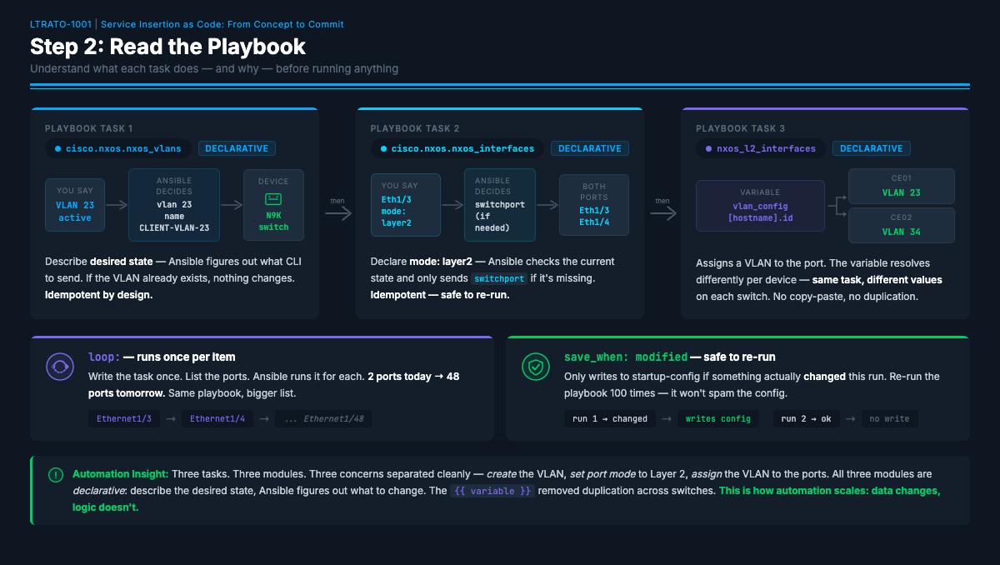
New to Ansible resource modules? Before filling in the variables, the Ansible Primer covers module naming,
state:behavior, and how to look up documentation for any module in this lab.
Step 3: Fill in the Variables¶
Now scroll to the vars: section in the playbook. You'll see TODO placeholders:
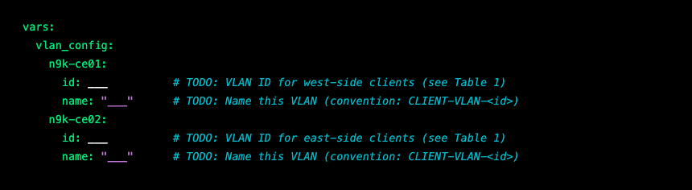
Using Table 1: VLAN Assignments, fill in the 4 values:
- n9k-ce01 VLAN ID: The VLAN for west-side clients (client1, client2)
- n9k-ce01 VLAN name: Use the naming convention
CLIENT-VLAN-<id> - n9k-ce02 VLAN ID: The VLAN for east-side clients (client3, client4)
- n9k-ce02 VLAN name: Use the naming convention
CLIENT-VLAN-<id>
Save the file when done. If using nano: Ctrl+O → Enter to save, then Ctrl+X to exit.
Step 4: Run the Playbook¶
Here's exactly what Ansible does with the variables you just filled in:
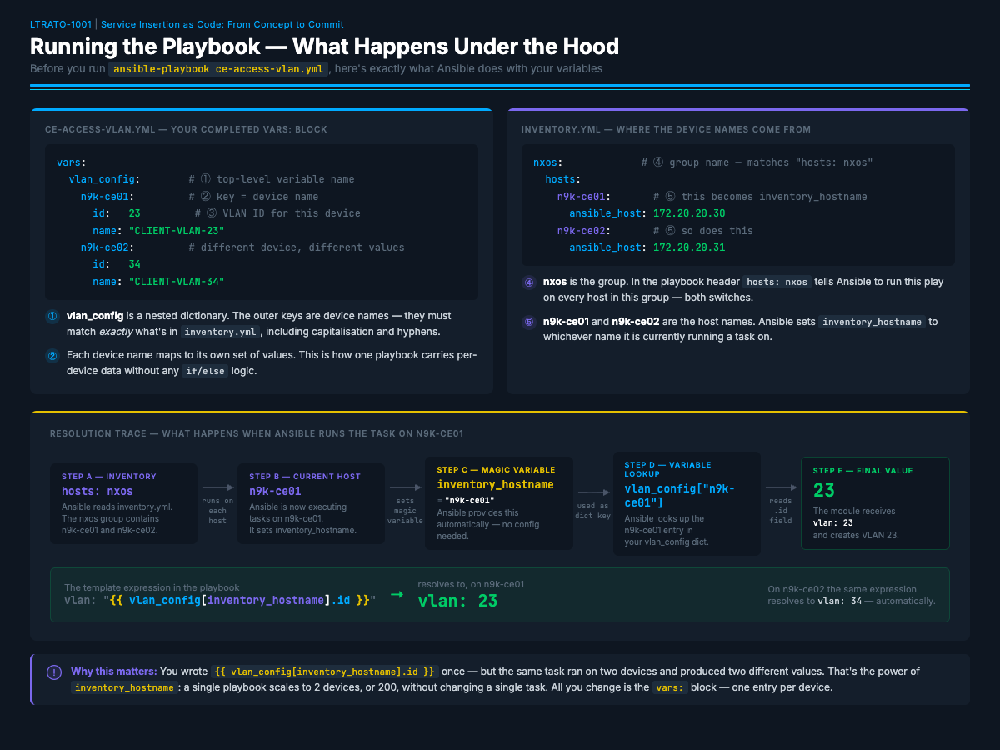
| Step | What happens |
|---|---|
| A | hosts: nxos → Ansible finds n9k-ce01 and n9k-ce02 in inventory |
| B | Ansible starts executing tasks on n9k-ce01 |
| C | Ansible sets inventory_hostname = "n9k-ce01" automatically |
| D | vlan_config["n9k-ce01"] → looks up the n9k-ce01 entry in your vars |
| E | .id → reads the id field → 23 |
The expression {{ vlan_config[inventory_hostname].id }} resolves to 23 on n9k-ce01 and 34 on n9k-ce02 — using the exact same playbook, with no if/else logic anywhere.
Now run the playbook:
Watch the output as it runs. Ansible uses color-coded status for each task:
changed(yellow) = Ansible made a configuration change on the deviceok(green) = The task ran but no changes were needed (config already correct)skipping(cyan) = The task'swhencondition was false for this hostfailed(red) = Something went wrong — read the error message
On the first run, most tasks should show changed. Here's what the configuration
tasks look like when they run successfully:
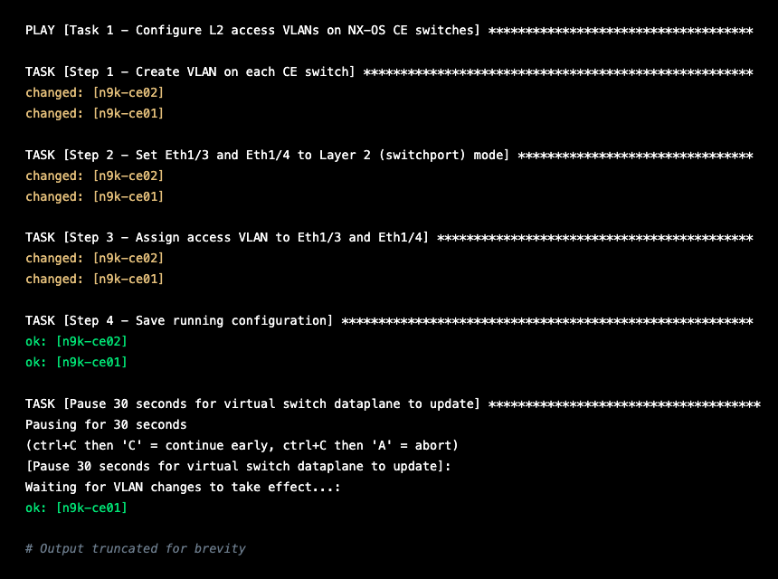
Why the 30-second pause? The N9Kv virtual switch needs a moment for its dataplane to start forwarding L2 traffic after VLAN changes. This is a vrnetlab quirk — physical Nexus hardware may also need a brief delay for STP convergence, but vrnetlab virtual switches typically need a longer pause.
After the config tasks, the playbook runs verification and test plays automatically. Here's what successful verification looks like:
💡 Automation Insight: Notice that every playbook includes
showcommands and ping tests as code. This is a game-changer: verification isn't something you do after the change — it's part of the change. In production, if a verification task fails, you can automatically trigger a rollback. The playbook becomes a self-validating change window.
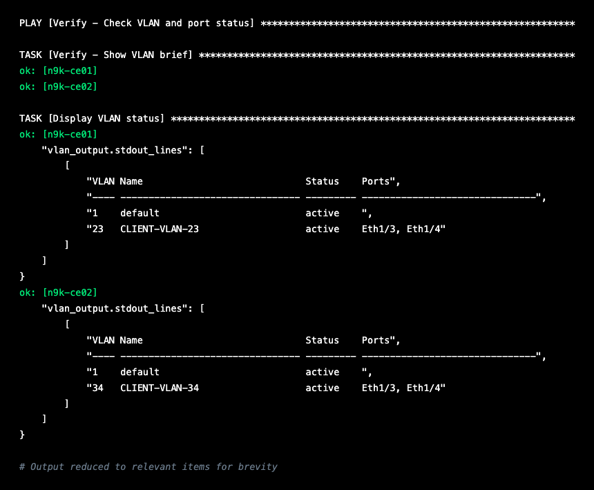
What to look for: Each switch should have its VLAN (23 or 34) in
activestatus with bothEth1/3andEth1/4listed in the Ports column. If you see the VLAN but no ports, the switchport assignment didn't work correctly.
Finally, the ping tests confirm end-to-end reachability across the VLAN:
The PLAY RECAP at the very end gives you a summary of everything that happened:
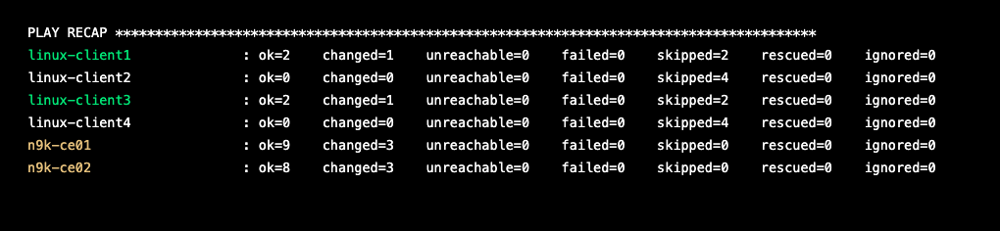
Reading the recap: Each line is a device.
changed=3means 3 tasks made changes on that switch.failed=0means nothing went wrong.skipped=2on the Linux clients means those tasks were skipped because thewhencondition was false for that host. If you seefailed=1or higher, scroll up to find the red error message — it will tell you exactly which task failed and why.
Step 5: Verify the Results¶
Confirm these results from the playbook output:
- [ ]
show vlan briefshows your VLANs with Eth1/3 and Eth1/4 assigned - [ ] client1 → client2 ping: 3 packets transmitted, 3 received, 0% packet loss
- [ ] client3 → client4 ping: 3 packets transmitted, 3 received, 0% packet loss
- [ ] PLAY RECAP shows failed=0 for all devices
Troubleshooting: If pings fail, verify you entered the correct VLAN IDs. The VLAN IDs must match Table 1, because the client IP addresses are already assigned to specific subnets. If you see a YAML syntax error, check that your values line up with the surrounding indentation — YAML is very picky about whitespace.
💡 Automation Insight: You just configured 2 switches, created 2 VLANs, assigned 4 ports, and verified connectivity — without logging into a single device. Manually, that's 2 SSH sessions, ~12 CLI commands each, and copy-pasting between windows hoping you don't typo a VLAN ID. The playbook took seconds.
Task 1b: Configuration Drift & Remediation¶
Objective¶
Demonstrate how Ansible detects and repairs configuration drift — when someone (or something) changes a device's config outside of automation, causing it to deviate from the desired state.
Before Task 1b: - Everything is working — client1 can ping client2, client3 can ping client4
After Task 1b: - You'll manually break the network, then watch Ansible find and fix the exact change — without touching anything else
Why This Matters¶
In production networks, configuration drift is one of the most common causes of outages. It happens every day:
- An engineer SSHs in at 2 AM to make a "quick fix" and forgets to update the automation
- A firmware upgrade resets an interface to its default state
- A colleague changes a port config on the wrong switch
The traditional response is to troubleshoot manually — SSH in, compare the running config to what you think it should be, and hope you catch the difference. That doesn't scale.
With automation, your playbook is the source of truth. When something drifts, you don't troubleshoot — you re-run the playbook. Ansible compares the device's current state against the desired state, fixes only what changed, and leaves everything else untouched. This is idempotency working for you in the real world.
Step 1: Introduce the Drift¶
SSH into n9k-ce01 and manually change the VLAN on the client1 port. This simulates an unauthorized change — maybe someone moved a port to the wrong VLAN while troubleshooting a different issue.
From the n9k-ce01 CLI:
Step 2: Confirm the Impact¶
Verify that client1 can no longer reach client2:
💡 Ansible Tip: Earlier in this task you SSH'd directly into the client to run a ping. Here we use
ansible -m rawto do the same thing without logging in. The-m rawflag sends a shell command over SSH without requiring Python on the target — which means it works on any SSH-accessible Linux or Unix host in your inventory. Ansible isn't just for playbooks. You can use it as a remote executor for one-off commands across your entire inventory from a single prompt.
You should see 100% packet loss:
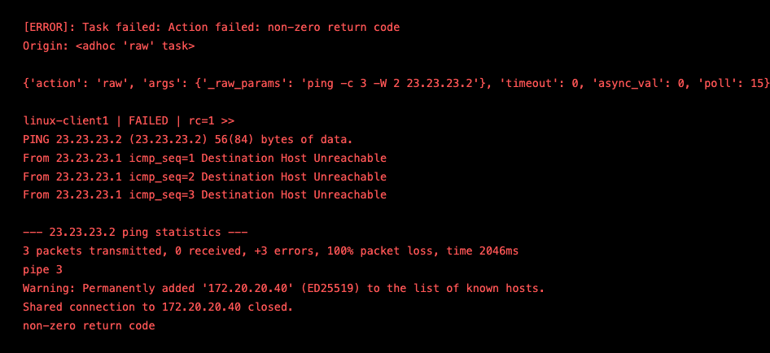
💡 Why does it say FAILED? Don't worry — this is exactly what we expected. The red
[ERROR]andFAILED | rc=1are Ansible telling you that the ping command exited with an error code. Here's the key:pingalways exits with an error code when packets are lost. Ansible sees that error code and flags it as a failure — but that's not a problem with Ansible or your setup. It's actually confirming that connectivity is broken, which is the whole point of this step. The100% packet lossline in the output is your proof. You will see this same pattern any time you useansible -m rawto run a command that returns a non-zero exit code.
One manual change on one interface, and connectivity is broken. Client1 is now on VLAN 27 while client2 is still on VLAN 23 — they're in different broadcast domains. In a network with hundreds of switches, finding a single misassigned VLAN would be a needle in a haystack.
Step 3: Check Before You Fix¶
Before re-running the playbook to fix the drift, run it in dry-run mode first to see exactly what Ansible would change — without touching any device:
💡 Ansible Tip: Two flags that every network engineer should know:
--check— Dry-run mode. Ansible connects to every device, evaluates every task, and tells you what would change — but makes zero changes. Nothing is written to any device. Think of it as "show me the plan before you execute it."
--diff— Shows a before/after comparison for any task that would make a change. Instead of just seeingchanged: [n9k-ce01], you see the exact value that was wrong and what Ansible would set it to.Why check first? In production, re-running a playbook without knowing what it will change is risky — especially if other engineers have made intentional changes since your last run.
--check --difflets you verify that Ansible has correctly identified only the drifted config before you commit the fix. You're looking forchangedon exactly one task on exactly one device — confirming the drift is isolated to what you expect.
When you run this command, you should see output like this:
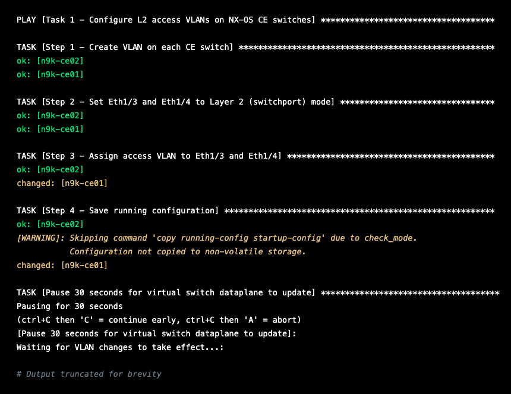
Here is what the dry run is telling you:
- Step 1 →
okon both switches — the VLANs already exist, nothing to do - Step 2 →
okon both switches — ports are already in Layer 2 mode, no drift here - Step 3 →
okon n9k-ce02,changedon n9k-ce01 — this is the drift. Ansible detected that Ethernet1/3 on n9k-ce01 has the wrong VLAN assigned and would correct it. n9k-ce02 was never touched, so it's still correct. - Step 4 → the
[WARNING]about skipping the config save is expected in check mode — Ansible never writes to any device during a dry run, so it skips the save and tells you so.
No changes have been made to any device yet. The dry run confirmed exactly what you expected — one task, one device, one fix needed. Now you can run the playbook for real with confidence.
Step 4: Let Ansible Remediate¶
Re-run the exact same playbook you ran in Task 1:
Here is the output you will see:
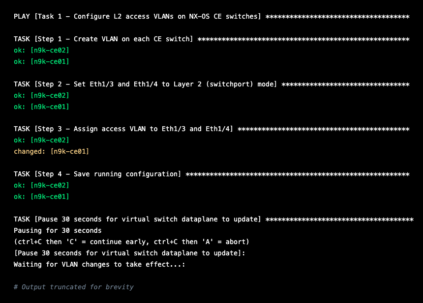
This is the actual fix. Ansible ran every task against the real device state —
and this time made the change for real. Step 3 shows changed: [n9k-ce01],
exactly what the dry run predicted. Everything else is ok because nothing
else had drifted. Ansible didn't blindly reconfigure everything — it checked
each task against the device's current state and only changed what was actually
wrong. That's the power of idempotency — it's not just "safe to re-run," it's a
drift detection and remediation engine.
Step 5: Verify the Fix¶
The playbook doesn't just fix the config — it verifies connectivity automatically as part of the same run. The built-in ping test runs at the end and you can see the result in the output:
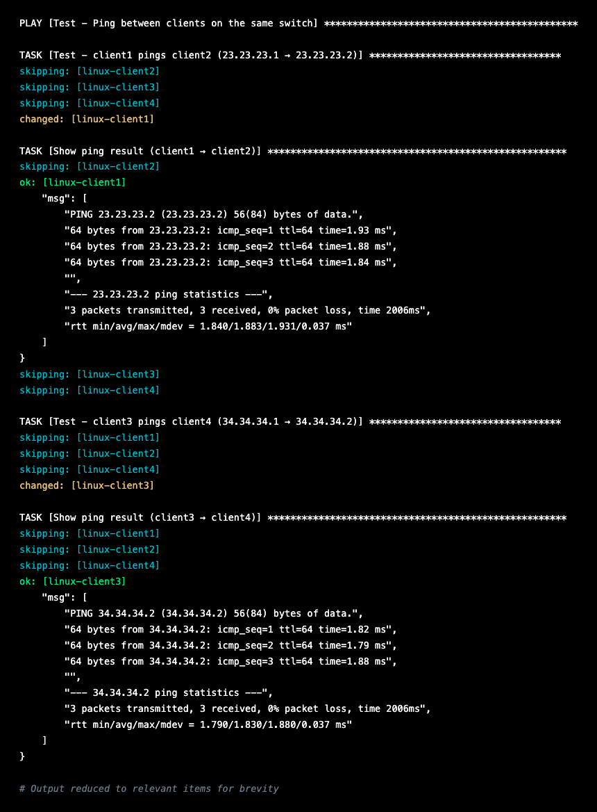
0% packet loss on both client pairs. Connectivity is fully restored. You didn't have to manually SSH into anything to verify — the playbook did it for you.
Checkpoint¶
- [ ] You manually changed Ethernet1/3 on n9k-ce01 to VLAN 27
- [ ] client1 → client2 ping showed 100% packet loss
- [ ] Re-running the playbook showed
changedon Step 4 for n9k-ce01 only - [ ] Re-running the playbook showed
okon Step 4 for n9k-ce02 (nothing touched) - [ ] client1 → client2 ping is back to 0% packet loss
💡 Automation Insight: In production, teams schedule playbook runs every few hours as a compliance check. If nothing drifted, every task reports
okandchanged=0. If something did drift, the playbook fixes it automatically and thechangedcount tells you exactly how many things were out of spec. You just turned a 45-minute troubleshooting session into a 30-second playbook run.